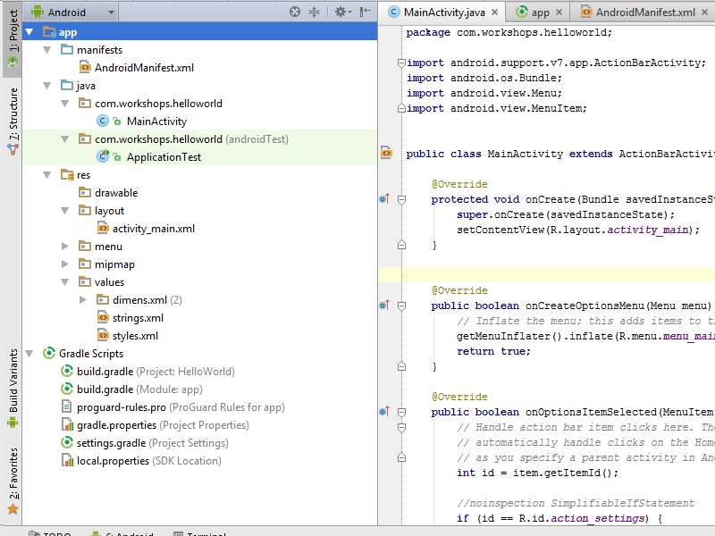

Środowisko
Java 1.7
Android Studio
Sdk 23.2
Estimote Sdk
Telefon + BLE + Android 5.1
Estimote Stickers
Jak zimne jest twoje...
... piwo?
Agenda
- Co będziemy budować
- Wstęp do Internet of things
- Srodowisko
- Zbudujmy to!
Co będziemy budować?


Internet of Things
Internet of Things ...
... is a network of interconnected things ...
... embedded with electronics and sensors ...
... which enables them to achieve greater value and service ...
... by exchanging and analysing data.
Pierwsze zastosowanie
Beacon'y
Dają kontekst
Mają wbudowane sensory
Komunikacja jednokierunkowa
Korzystają z BlueTooth LowEnergy
Estimote stickers
zasięg do ~7m
Wodoodporne
żyją około rok
iBeacon
- Monitorowanie
- Określanie odległości
- UUID, major, minor
Eddystone
- Status beacona
Nearable Protocol
typ
id
pozycja w przestrzeni
ruch w osiach X, Y, Z
temperature
moc sygnału
poziom baterii
firmware
Aplikacja Estimote

Estimote Cloud
Android
Activity
public class MainActivity extends Activity {
@Override
protected void onCreate(Bundle savedInstanceState) {
super.onCreate(savedInstanceState);
setContentView(R.layout.activity_main);
}
} Fragment
public class BeaconListFragment extends Fragment {
public BeaconListFragment() {
// Required empty public constructor
}
@Override
public View onCreateView(LayoutInflater inflater, ViewGroup container,
Bundle savedInstanceState) {
// Inflate the layout for this fragment
return inflater.inflate(R.layout.fragment_beacon_list, container, false);
}
}
Application
public class ApplicationKYN2016 extends Application {
@Override
public void onCreate() {
super.onCreate();
}
Logger
debug (Log.d)
info (Log.i)
error (Log.e)
verbose (Log.v)
warn (Log.w)
Struktura projektu
Gradle
android {
compileSdkVersion 23
buildToolsVersion "23.0.3"
defaultConfig {
applicationId "com.example.adam.kyn_workshop_2016"
minSdkVersion 21
targetSdkVersion 23
versionCode 1
versionName "1.0"
}
....
dependencies {
compile fileTree(dir: 'libs', include: ['*.jar'])
testCompile 'junit:junit:4.12'
compile 'com.android.support:appcompat-v7:23.2.1'
compile 'com.android.support:design:23.2.1'
compile 'com.estimote:sdk:0.9.4@aar'
} Android Manifest
<?xml version="1.0" encoding="utf-8"?>
<manifest xmlns:android="http://schemas.android.com/apk/res/android"
package="com.workshops.helloworld" >
<uses-permission
android:name="android.permission.SOME_PERMISSION" />
<application
android:allowBackup="true"
android:icon="@mipmap/ic_launcher"
android:labelw="@string/app_name"
android:theme="@style/AppTheme" >
<activity
android:name=".MainActivity"
android:label="@string/app_name" >
<intent-filter>
<action android:name="android.intent.action.MAIN" />
<category android:name="android.intent.category.LAUNCHER" />
</intent-filter>
</activity>
</application>
</manifest>
Budujmy!
Nowy projekt
Stworzyć obiekt Application
Wpis w android manifest
android:name=".ApplicationKYN2016"
Znajdowanie beaconoów
public void startRanging(){
mBeaconManager.connect(new BeaconManager.ServiceReadyCallback() {
@Override
public void onServiceReady() {
mBeaconManager.startNearableDiscovery();
}
});
}
public void stopRanging(){
mBeaconManager.disconnect();
}
Wykrywanie beaconów
mBeaconManager.setNearableListener(new BeaconManager.NearableListener() {
@Override
public void onNearablesDiscovered(List<Nearable>nearables) {
for(Nearable nearable: nearables) {
Log.d("beacon", nearable.identifier);
}
}
});Rozpocząć skanowanie!
@Override
protected void onStart() {
super.onStart();
mApplication.startRanging();
}
@Override
protected void onDestroy() {
super.onDestroy();
mApplication.stopRanging();
}
Tak, ten błąd był oczekiwany
<uses-permission android:name="android.permission.BLUETOOTH_ADMIN" />
<uses-permission android:name="android.permission.INTERNET" />
<uses-permission android:name="android.permission.ACCESS_NETWORK_STATE" />
<uses-permission android:name="android.permission.ACCESS_FINE_LOCATION" />
public class BeaconItem {
private String name;
private String id;
private static Map<String, String> beaconMap;
static {
beaconMap = new HashMap<>();
beaconMap.put("33927f15e3b75104", "fridge");
beaconMap.put("66fc8e73f145e172", "door");
beaconMap.put("0929888a57bf4fb7", "bag");
beaconMap.put("3f2ac3b188b1adfc", "bike");
beaconMap.put("0a296db82040d52d", "chair");
beaconMap.put("bbe08f1308d5093f", "car");
beaconMap.put("84b70d36fd22d5a6", "generic");
beaconMap.put("5085ab2174e6ffff", "bed");
beaconMap.put("bb6820d988547674", "dog");
beaconMap.put("389a2f206e537f96", "shoe");
}
} private BeaconItem(String name, String id){
this.name = name;
this.id = id;
}
public static ArrayList<BeaconItem> fromList(List<String> idList){
ArrayList<BeaconItem> beaconList = new ArrayList<>();
for (String id : idList){
beaconList.add(new BeaconItem(beaconMap.get(id), id));
}
return beaconList;
}public String getName() {
return name;
}
public String getId() {
return id;
}<?xml version="1.0" encoding="utf-8"?>
<LinearLayout
xmlns:android="http://schemas.android.com/apk/res/android"
android:orientation="horizontal"
android:layout_width="match_parent"
android:layout_height="match_parent">
</LinearLayout><ImageView android:id="@+id/icon"
android:layout_width="75dp"
android:layout_height="75dp" />
<TextView android:id="@+id/name"
android:layout_width="wrap_content"
android:layout_height="wrap_content"
android:layout_marginStart="15dp"
android:layout_gravity="center_vertical"
android:fontFamily="sans-serif-thin"
android:textSize="24sp"/>public class BeaconArrayAdapter extends ArrayAdapter<BeaconItem>{
private Context mContext;
public BeaconArrayAdapter(Context context, ArrayList<BeaconItem> beacons) {
super(context, 0, beacons);
this.mContext = context;
}
}@Override
public View getView(int position, View convertView, ViewGroup parent) {
BeaconItem item = getItem(position);
if (convertView == null) {
convertView = LayoutInflater.from(getContext())
.inflate(R.layout.beacon_item, parent, false);
}
ImageView icon = (ImageView) convertView.findViewById(R.id.icon);
TextView name = (TextView) convertView.findViewById(R.id.name);
Resources resources = mContext.getResources();
final int resourceId = resources.getIdentifier(item.getName(),
"drawable", mContext.getPackageName());
icon.setImageResource(resourceId);
name.setText(item.getName());
return convertView;
}public class BeaconListFragment extends Fragment {
public BeaconListFragment() {
// Required empty public constructor
}
@Override
public View onCreateView(LayoutInflater inflater, ViewGroup container,
Bundle savedInstanceState) {
// Inflate the layout for this fragment
return inflater.inflate(R.layout.fragment_beacon_list, container,
false);
}
}
if (savedInstanceState == null) {
getFragmentManager().beginTransaction()
.add(R.id.main_fragment, new BeaconListFragment(), "BeaconListFragment").commit();
}
<FrameLayout android:id="@+id/main_fragment"
android:layout_width="fill_parent"
android:layout_height="fill_parent">
<ListView android:id="@+id/beacon_list"
android:layout_width="match_parent"
android:layout_height="wrap_content" />
@Override
public View onCreateView(LayoutInflater inflater, ViewGroup container,
Bundle savedInstanceState) {
// Inflate the layout for this fragment
View view = inflater.inflate(R.layout.fragment_beacon_list, container,
false);
return view;
}
private ListView mBeaconList;
private ApplicationKYN2016 mApplication;
private Handler mHandler;
private List<String> mDataset;
private ProgressDialog mProgress;
private static final Integer UPDATE_LIST_INTERVAL = 4 * 1000;
mApplication = (ApplicationKYN2016) getActivity().getApplication();
mBeaconList = (ListView) view.findViewById(R.id.beacon_list);
mDataset = new ArrayList<>();
mHandler = new Handler();
mProgress = ProgressDialog.show(getActivity(), "",
"Skanowanie beaconów...", true);
AdapterView.OnItemClickListener itemClickListener =
new AdapterView.OnItemClickListener() {
@Override
public void onItemClick(AdapterView<?> parent, View view, int position,
long id) {
}
};
mBeaconList.setOnItemClickListener(itemClickListener);
@Override
public void onItemClick(AdapterView<?> parent, View view, int position,
long id) {
BeaconItem beacon = (BeaconItem)parent.getItemAtPosition(position);
Toast toast = Toast.makeText(getActivity(), beacon.getId(),
Toast.LENGTH_LONG);
toast.show();
}
Odświeżanie listy
private void updateAvailableBeacons(){
Set<Nearable> nearables = mApplication.getTemperatureMap().keySet();
for(Nearable nearable: nearables) {
if(!mDataset.contains(nearable.identifier)) {
if (mProgress.isShowing())
mProgress.dismiss();
mDataset.add(nearable.identifier);
}
}
BeaconArrayAdapter beaconAdapter = new BeaconArrayAdapter(getActivity(), BeaconItem.fromList(mDataset));
mBeaconList.setAdapter(beaconAdapter);
beaconAdapter.notifyDataSetChanged();
}
Runnable
final Runnable updateBeaconList = new Runnable() {
@Override
public void run() {
try {
pdateAvailableBeacons();
} finally {
mHandler.postDelayed(updateBeaconList, UPDATE_LIST_INTERVAL);
}
}
};